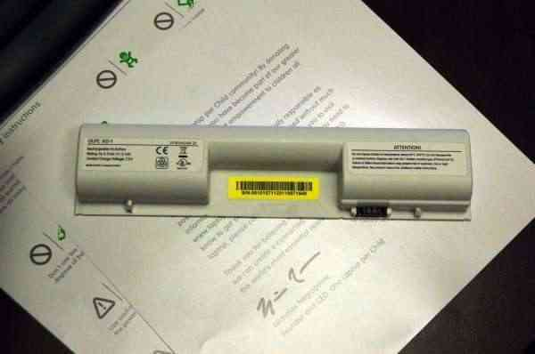
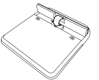
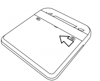

| Conserver l'espace disque | Index | Remplacer la batterie |
Le XO a besoin de sa batterie ou d'être branché directement à une prise murale pour fonctionner. L'ordinateur portable utilisera l'une ou l'autre source d'énergie. Lorsque vous recevez votre batterie, elle devrait être livrée avec une certaine charge d'énergie. Lisez les instructions suivantes pour installer votre batterie et charger votre portable.

Voici la batterie du XO. Elle se place au dos de votre XO.

3. Faites glisser vers la gauche le verrou situé à votre gauche, puis insérez - avec douceur - la batterie en place.
4. Faites glisser vers la gauche le verrou situé à votre droite afin de bloquer la batterie.

Charger la batterie
- Assurez-vous que la batterie soit placée à l'arrière du XO.
- Insérez le cordon d'alimentation dans votre XO.
- Insérez l'autre sortie du cordon d'alimentation dans la source d'énergie la plus proche, comme celle d'un générateur solaire ou d'une batterie 12 volts de voiture.
Brancher votre XO
Vous pouvez utiliser votre XO lorsqu'il est sous tension, lorsque vous chargez la batterie, ou lorsque vous avez une bonne source d'énergie. Comme source énergétique, vous pouvez utiliser le générateur fourni par votre école, le réseau électrique ou n'importe quelle autre source d'électricité.
Lorsque vous chargez la batterie
L'icône batterie sur votre écran se colore, vous indiquant ainsi la charge actuelle ou la quantité de charge restante dans votre batterie. Faites glisser le pointeur sur cette icône afin de voir où en est sa charge. Pendant que votre batterie est en charge, l'indicateur lumineux de batterie situé près de la touche énergie (représentée par une pile) est jaune. Il devient vert lorsque la batterie est complètement chargée. Une lumière rouge vous indique que la batterie est presque déchargée et que vous devriez la charger rapidement.
Diagnostiquer les pannes
Si la charge batterie descend à un niveau trop bas, votre ordinateur portable ne pourra pas démarrer ; vous connecter à une source d'énergie externe ne sera pas suffisant pour charger la batterie.
La solution sera alors d'enlever la batterie, d'allumer le XO sur une source externe, puis ensuite d'insérer la batterie à nouveau. Ainsi le XO pourra se charger et l'indicateur de chargement s'allumera.
Si vous êtes du type bricoleur, plusieurs solutions aux problèmes de batteries sont disponibles sur http://wiki.laptop.org/go/XO_Troubleshooting_Battery.
Conserver l'espace disque Index Remplacer la batterie